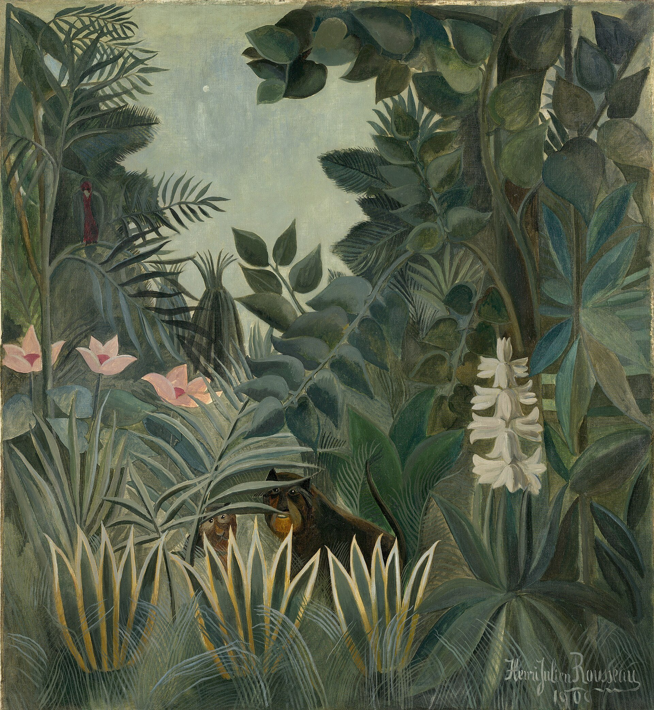
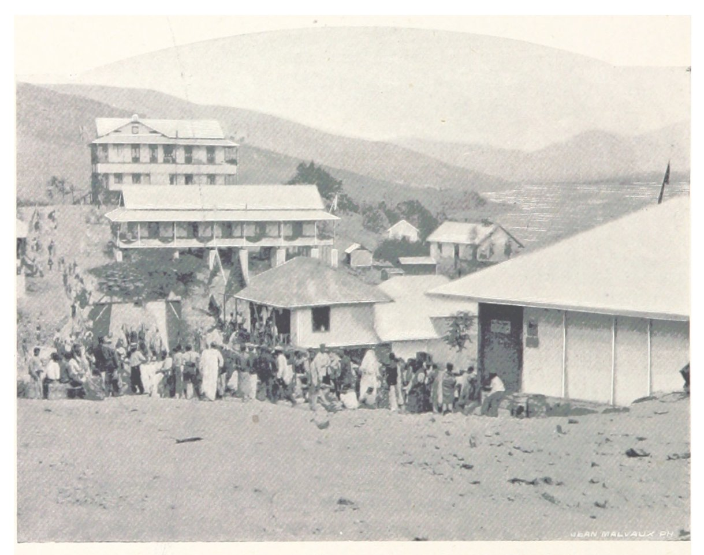

← 目次“My first interview with the manager was curious. He did not ask me to sit down after my twenty-mile walk that morning. He was commonplace in complexion, in features, in manners, and in voice. He was of middle size and of ordinary build. His eyes, of the usual blue, were perhaps remarkably cold, and he certainly could make his glance fall on one as trenchant and heavy as an axe. But even at these times the rest of his person seemed to disclaim the intention. Otherwise there was only an indefinable, faint expression of his lips, something stealthy—a smile—not a smile—I remember it, but I can’t explain. It was unconscious, this smile was, though just after he had said something it got intensified for an instant. It came at the end of his speeches like a seal applied on the words to make the meaning of the commonest phrase appear absolutely inscrutable.
He was a common trader, from his youth up employed in these parts—nothing more. He was obeyed, yet he inspired neither love nor fear, nor even respect. He inspired uneasiness. That was it! Uneasiness. Not a definite mistrust—just uneasiness—nothing more. You have no idea how effective such a... a... faculty can be.
He was obeyed, yet he inspired neither love nor fear, nor even respect. He inspired uneasiness. That was it! Uneasiness.
He had no genius for organizing, for initiative, or for order even. That was evident in such things as the deplorable state of the station. He had no learning, and no intelligence. His position had come to him—why? Perhaps because he was never ill... He had served three terms of three years out there... Because triumphant health in the general rout of constitutions is a kind of power in itself.
Because triumphant health in the general rout of constitutions is a kind of power in itself.
When he went home on leave he rioted on a large scale—pompously. Jack ashore—with a difference—in externals only. This one could gather from his casual talk. He originated nothing, he could keep the routine going—that’s all. But he was great. He was great by this little thing that it was impossible to tell what could control such a man. He never gave that secret away. Perhaps there was nothing within him. Such a suspicion made one pause—for out there there were no external checks.
He was great by this little thing that it was impossible to tell what could control such a man. He never gave that secret away. Perhaps there was nothing within him.
Once when various tropical diseases had laid low almost every ‘agent’ in the station, he was heard to say, ‘Men who come out here should have no entrails.’ He sealed the utterance with that smile of his, as though it had been a door opening into a darkness he had in his keeping. You fancied you had seen things—but the seal was on. When annoyed at meal-times by the constant quarrels of the white men about precedence, he ordered an immense round table to be made, for which a special house had to be built. This was the station’s mess-room. Where he sat was the first place—the rest were nowhere. One felt this to be his unalterable conviction. He was neither civil nor uncivil. He was quiet. He allowed his ‘boy’—an overfed young negro from the coast—to treat the white men, under his very eyes, with provoking insolence.
Once when various tropical diseases had laid low almost every ‘agent’ in the station, he was heard to say, ‘Men who come out here should have no entrails.’
“He began to speak as soon as he saw me. I had been very long on the road. He could not wait. Had to start without me. The up-river stations had to be relieved. There had been so many delays already that he did not know who was dead and who was alive, and how they got on—and so on, and so on. He paid no attention to my explanations, and, playing with a stick of sealing-wax, repeated several times that the situation was ‘very grave, very grave.’ There were rumours that a very important station was in jeopardy, and its chief, Mr. Kurtz, was ill. Hoped it was not true. Mr. Kurtz was... I felt weary and irritable. Hang Kurtz, I thought. I interrupted him by saying I had heard of Mr. Kurtz on the coast. ‘Ah! So they talk of him down there,’ he murmured to himself. Then he began again, assuring me Mr. Kurtz was the best agent he had, an exceptional man, of the greatest importance to the Company; therefore I could understand his anxiety. He was, he said, ‘very, very uneasy.’ Certainly he fidgeted on his chair a good deal, exclaimed, ‘Ah, Mr. Kurtz!’ broke the stick of sealing-wax and seemed dumfounded by the accident. Next thing he wanted to know ‘how long it would take to’... I interrupted him again. Being hungry, you know, and kept on my feet too. I was getting savage. ‘How can I tell?’ I said. ‘I haven’t even seen the wreck yet—some months, no doubt.’ All this talk seemed to me so futile. ‘Some months,’ he said. ‘Well, let us say three months before we can make a start. Yes. That ought to do the affair.’ I flung out of his hut (he lived all alone in a clay hut with a sort of verandah) muttering to myself my opinion of him. He was a chattering idiot. Afterwards I took it back when it was borne in upon me startlingly with what extreme nicety he had estimated the time requisite for the ‘affair.’

Jean Malvaux（写真製版）, Matadi／Public domain／Commons
“I went to work the next day, turning, so to speak, my back on that station. In that way only it seemed to me I could keep my hold on the redeeming facts of life. Still, one must look about sometimes; and then I saw this station, these men strolling aimlessly about in the sunshine of the yard. I asked myself sometimes what it all meant. They wandered here and there with their absurd long staves in their hands, like a lot of faithless pilgrims bewitched inside a rotten fence.
The word ‘ivory’ rang in the air, was whispered, was sighed. You would think they were praying to it.
The word ‘ivory’ rang in the air, was whispered, was sighed. You would think they were praying to it. A taint of imbecile rapacity blew through it all, like a whiff from some corpse. By Jove! I’ve never seen anything so unreal in my life. And outside, the silent wilderness surrounding this cleared speck on the earth struck me as something great and invincible, like evil or truth, waiting patiently for the passing away of this fantastic invasion.
And outside, the silent wilderness surrounding this cleared speck on the earth struck me as something great and invincible, like evil or truth, waiting patiently for the passing away of this fantastic invasion.